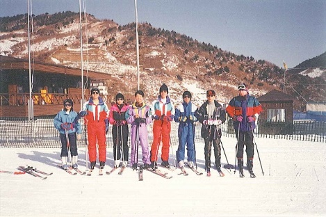
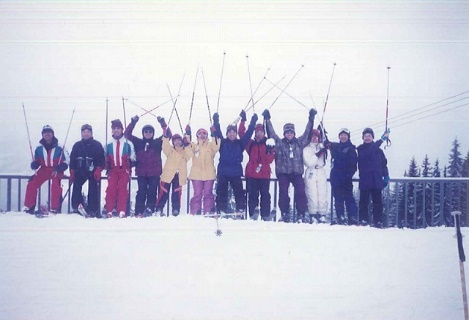
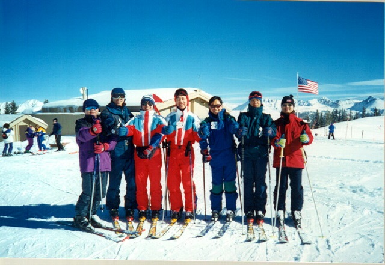
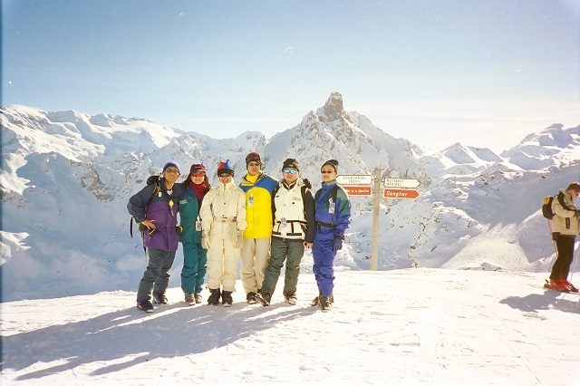
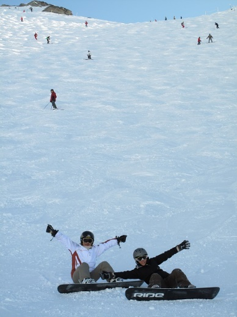
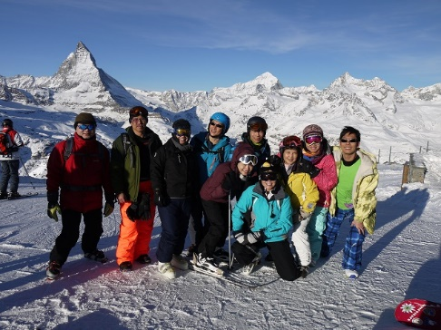
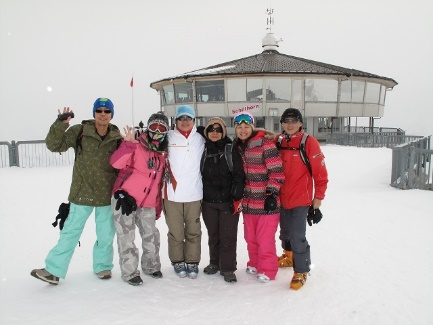
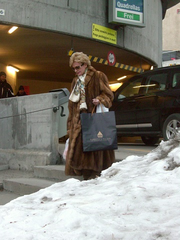
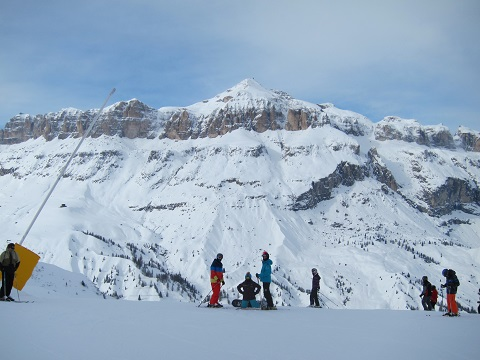

1992年1月中, 刚好圣诞节后春节前, 机票酒店都便宜, 当时有位从事旅行社的朋友介绍去滑雪. 心想不错, 阳光海滩都去了n次, 不如去体验一下冬季运动. 80年代末期在北京工作时在什剎海自学滑冰, 心想滑雪亦不会太难. 于是四出找朋友结伴而行, 结果没有一个愿意去. 把心一横: 只身便去了韩国龙平. 东南亚都去过好多次菲律宾、泰国, 谁知到汉城后发现言语隔膜好严重, 几乎找不到去龙平的长途车. 到龙平更惶论后找说英语的滑雪教练. 玩了4天, 每天摔倒了上百次: 年青勇敢, 真的未想过会受伤. 其后93、94及95年, 连续3年春节时都去韩国茂珠滑雪场. 而且参加的朋友一年比一年多. 94年那次已有12人同住一套4房公寓.
 1996年当时仍在北京工作, 因有老外亲戚(土生土长的欧洲人)推介我去法国滑雪. 首次空降到欧洲竟然是全球最大的联盟滑雪场Portes du Soleil(内有连通法国+瑞士的雪场), 有管理的(见注a)雪道总长650公里. 1997年带春节时份, 又自组了一团16人再闯Portes du Soleil. 注a): 当地雪场大, 雪道都是顺着天然地理产生. 在“雪地道图(ski map)”内标示为雪道的会有巡逻、定期平整、路标. 其他非官方雪道亦大有人滑, 就是没有管理.
 去了两年法国, 虽然言语障碍比韩国较好处理, 总觉得当时法国人社会缺少英语指示/广播, 有时候某吊车/雪道因天气暂封我们是.无法得知. 1998年我便选了美国Colorado州的Vail. 当时互联网在美国相当普及, 我便是以电邮加信用卡订住宿以及机场至雪场的包车. Vail号称全美国最大, 经一周的体验后其大小不到Portes du Soleil的一半. 兼且美国吃的实在比法国的差远
1999年决定重返欧洲, 网上搜寻发现法国3-Vallees是较多英国人去的, 应该英语较为普遍吧. 过往我去欧美都是滑一周, 这次我刚离开北京的工作回到香港而未有事干, 干脆来个两周雪白假期. 头一周只是我和家人去, 当时带着5岁的女儿, 香港飞巴黎再转至里昂. 从里昂坐长途大巴去到Meribel, 足足用了(香港/巴黎12小时 + 转机等2小时 + 巴黎/里昂1小时 + 等大巴3小时 + 大巴车程3.5小时)22小时. 肩负一家3口行李、两套雪橇在雪场内找所订的住宿, 够累! 幸好当地英语真的通行, 不然就更可怜. 真不往此行, 以单一国家来说, 此雪场号称是世界最大: 有管理的雪道总长600公里, 比上述的Portes du Soleil少50公里(Portes du Soleil是跨国界雪场瑞士+法国=650公里). 玩了两周, 意悠未尽, 心里已想好明年再来. 谁知道2000年及2001年冬都到此一滑. 自此我已绑定了每次两周的滑雪假期. 由于时间充足, 我于2000及2001每次都上一周的滑雪课程. 之前从未正规学过, 此两年的训练的确学会好多技巧.
1999年继Meribel后至2007年都是滑游法国: 先后到过亦重复过的雪场有La Plagne, Les Arcs, La Tania, Meribel Mottaret, Val d’Isere, Avoriaz. 于2000年6月24日注册了“可能是香港第一个滑雪会”: 名为es Ski. 为此创会人修读了[香港大学&澳洲Victoria University]联办的学位文凭“Graduate Diploma in Sport & Recreation Management”. 当年正是网络崛起之际, 更为写网页而进修了中文大学校外进修部的FrontPage及CorelDraw两个课程. 后记: 法国滑雪一年比一年贵, 主要是汇价由2002年1欧元对7.2港元, 至2007年1欧元对9.8港元, 上升了36%. 跟当初老外亲戚介绍我去法国的年代差远了, 兼看了一篇欧洲的杂志说法国的房地产价格已不便宜, 并且看齐了瑞士.

以前那位老外亲戚曾告诉我法国滑雪便宜, 瑞士好贵. 但到2008年法国的大场已滑过, 有些甚至去过两三遍, 终于转向瑞士. 首度登陆瑞士单一最大滑雪场Verbier, 它邻近法国, 仍以法语为主. 一般欧洲场以蓝红黑三色定雪道凡难易(黑色最难), 此场有些是黄色: 代表是不设巡逻、不经平整的纯天然雪道, 相当刺激. 我自问对于所有黑色雪道不眨眼就滑下去. 这次在Verbier遇上其中一条黄色, 一看便马上掉头走: 简直是一度墙, 雪又松散, 好惊吓!
2009年去了瑞士的Zermatt + Verbier: Zermatt 有名之处是它的山Matterhorn, 是瑞士三角巧克力的标志. 好多瑞士的纪念品都用此山为图案. Zermatt可说得上是瑞士滑雪场豪华榜第二位 (第一位是St Moritz, 下文有提及). 一般滑雪交通都用吊车、缆车, Zermatt 有半边山是用火车连通的. 就算是大风雪日子亦不会停驶. Zermatt 的滑雪套票好贵, 当年6日票CHF394. 此雪场可以连通意大利的Cervinia, 我们都带备欧罗, 滑去意大利吃顿正宗意式菜. 一旦刮大风, 通往意大利的缆车会停驶, 剩余可滑的雪道就不多.

2010年仍然是瑞士: 少女峰Jungfrau + Verbier.
少山峰有名之处是18世纪有很多欧洲的登山者以攀此山为荣耀. 少女峰特别之处是能坐火车到3500m高的山上. 而少女峰滑雪村主要由三个村 (Wengen, Murren, Grindelwald) 组成, 此雪场各村都有火车连通, 而大部份滑道都是坐火车去. 另一少女峰出名的原因是60年代007大片On Her Majesty's Secret Service (港译 铁金刚勇破雪山堡)就在Murren拍摄过, 该吊车站内仍展有当年剧照.

2011年 瑞士St Moritz + 奥地利St Anton.
St Moritz说得上是瑞士最高档的滑雪圣地, 我所提的高档不是雪场有多大、有多豪华, 而是在它那儿渡假的游客=穿皮草; 李箱是LV; 滑雪外衣不是运动品牌而是什么Gucci, Channel, Dior等时装品牌. 该渡假村的4星酒店占全村一半(注: 法国瑞士的非商务酒店,4星是顶级). 该场滑道不怎么样,没有什么惊喜, 真适合高贵之士去 – 既安全而受伤机会又少. St Moritz 套票联盟雪场有4个(Corviglia, Corvatsch, Diavolezza, Zuoz), 都要坐免费穿梭巴士去.
St Anton加上联盟Lech, 说得上是奥地利最大的场. 好几位滑友都向我说过:“人家说奥地利滑雪便宜”. 去过之后发现 住宿、饮食、消费与法国相比一点都不便宜: 1个牛角包€1.2; 山上一杯咖啡€3.5
2012年 瑞士Zermatt + 法国Chamonix
首周的Zermatt已是第二次去了, 这次住近火车站, 出入滑雪、买菜、购物都方便. 此场的描述可参阅第6章. Chamonix位于欧洲第一峰Mont Blanc的山脚, 是极限滑雪界中的扎根地. 它有名之处是Off-piste skiing (美国叫backcountry skiing): 那些没有吊车能到、非官方雪道. 动不动要坐直升机去的. 因此又号称“玩命运动之都”. 好多北美好手都移居此地, 以便更多体验这里独特之天险. 当然亦有不少好手长埋此处, 其中有一美国人 Trevor Peterson 是位表表者. 他死后10年, 他15岁儿子再闯此峰以完成父亲遗愿.
Chamonix本身是一个大镇, 有齐物资. 如循规蹈矩在官方雪道是没有危险. 它本身之4个山头(La Tour, Argentire, Chamonix, Les Houches)之雪道是不相连, 需要乘免费穿梭巴士遂个去. 它号称一张吊车全票有1100米滑道, 其实是包括了意大利Courmayeur 及瑞士Verbier, 但交通费自付, 如不是先驾游, 即使买了全票, 亦不会花百欧元包车去Courmayeur及Verbier.
2013年 奥地利Ischgl + 意大利Val Gardena
多年来这是首次不涉足瑞士及法国的滑雪游. Ischgl是奥地利第二大雪场. 坐落阿尔卑斯山的Tyrol地区, 覆盖雪厚有相当保证. 第二次滑游奥地利, Ischgl的房租比瑞士还贵, “奥地利滑雪便宜”真tmd别提.

Val Gardena 是坐落阿尔卑斯山的Tyrol地区. Gardena意思是花园, 原来此场夏天是遍山开花, 相当美丽, 故得此名. 还有, 此地有名之处是它有一座石山名叫Sella被列入联合国世界遗产. 围绕此Sella都有雪道, 让你边滑边欣赏石山. 第一次滑意大利, 其房价物价真的便宜. 吃的都比法、瑞、奥便宜. 此场地最近的国际机场反而是威尼斯, 因此我们有几位滑完一周后游了威尼斯2天才回家.
后记: Ischgl联盟雪场Galtur是被受触目, 1999年2月Galtur此小村被连日大雪造成雪崩, 催毁了半条村及30条人命. 我当时身在法国另一雪场, 看到CNN新闻后…伤感!
2014年 法国 Meribel + Les Arc 及 2015年 法国 Avoriaz